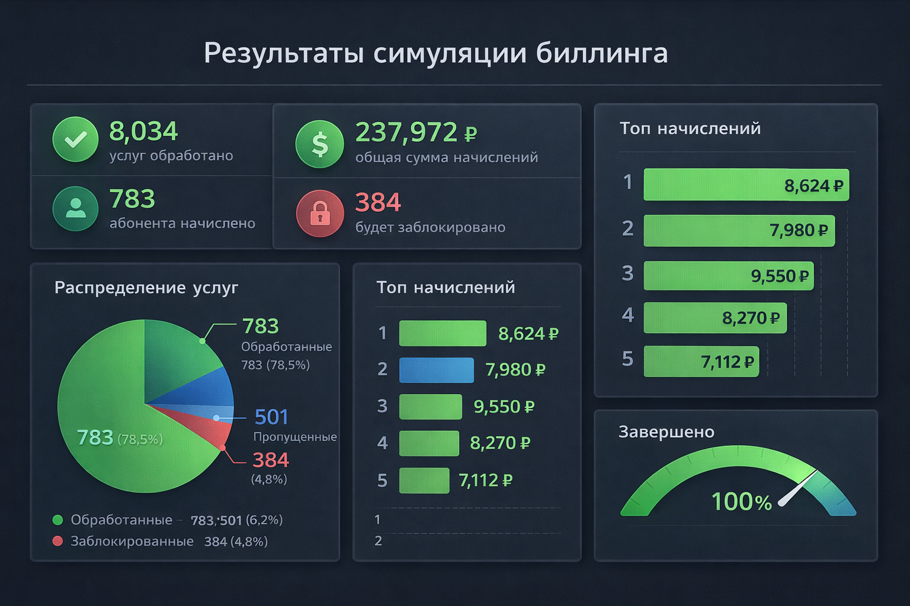
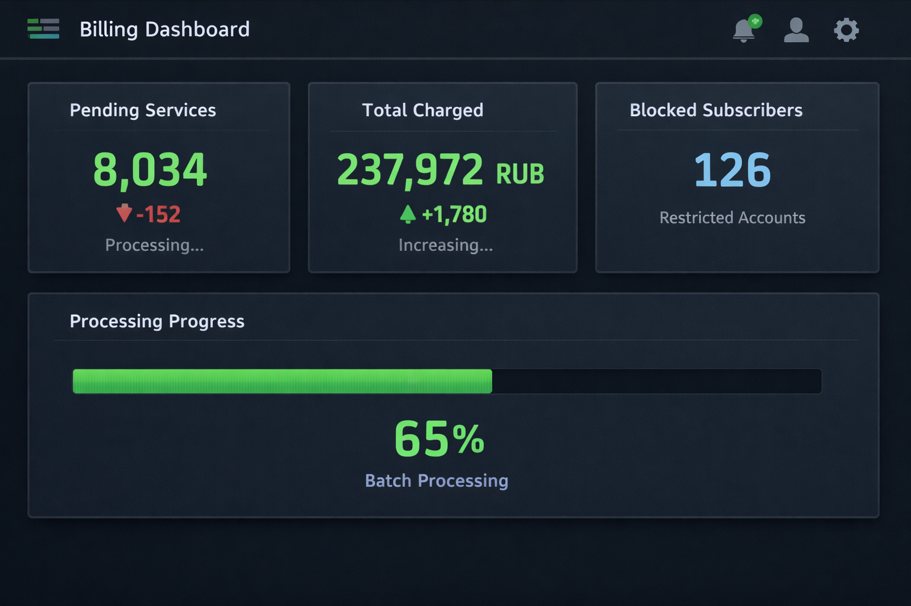
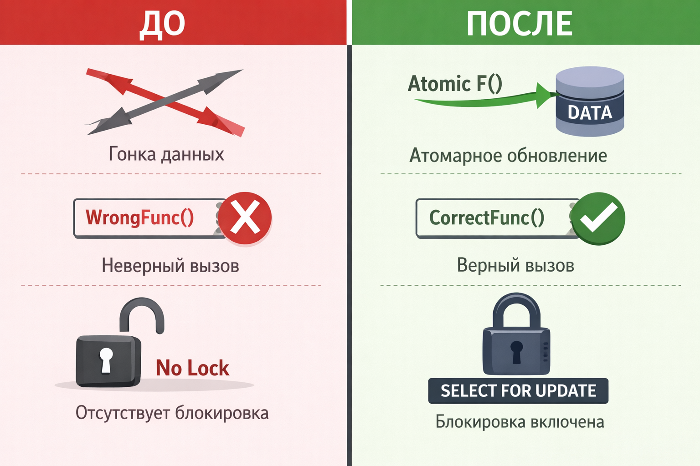
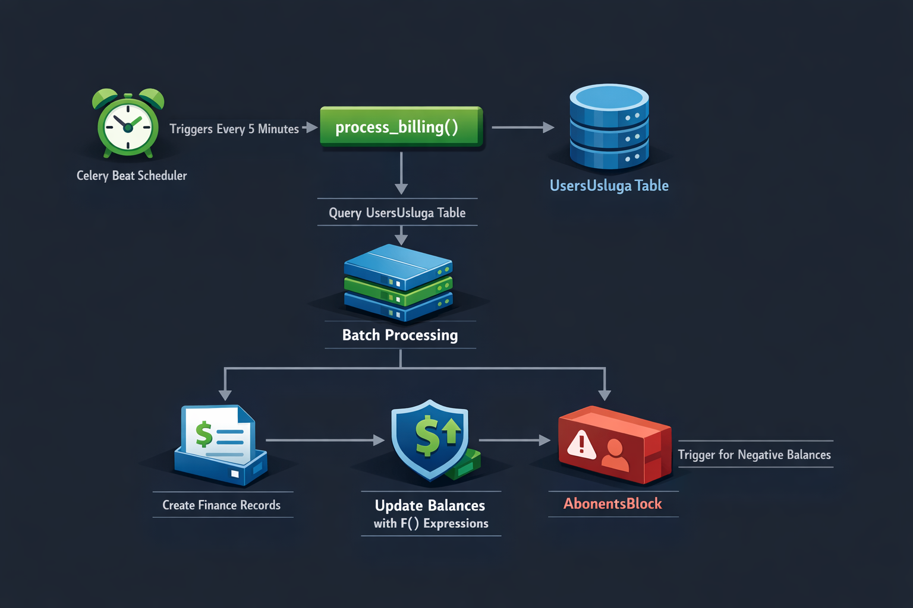
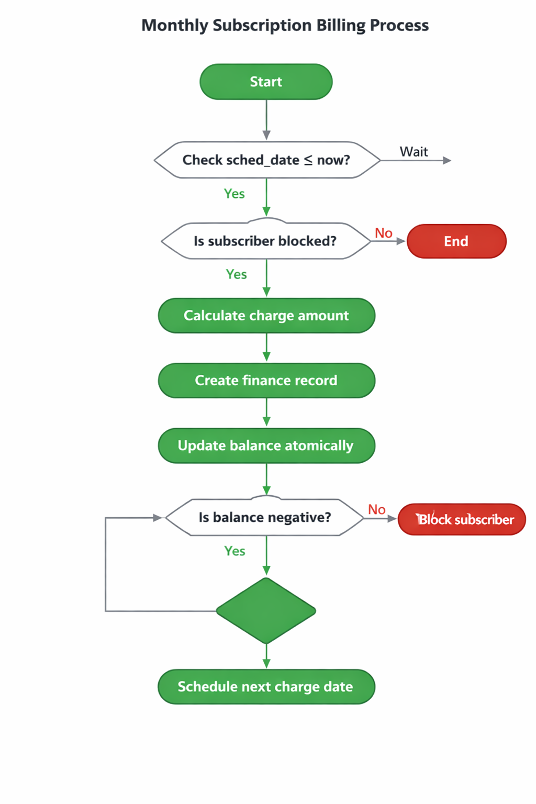
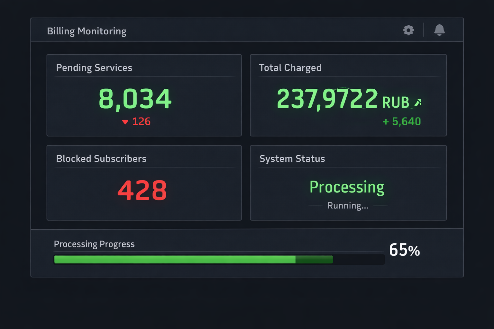

Симуляция биллинга: подготовка к 1 апреля 2026
Smit Billing v1.5.0 (build 39) • testbill.smit34.ru • 30 марта 2026
Каждый месяц биллинг автоматически списывает абонентскую плату с лицевых счетов абонентов —
за интернет, ТВ-пакеты, статические IP-адреса и другие услуги. Это ключевая операция,
от которой зависит финансовая корректность всей системы.
Перед первым реальным списанием в новом биллинге (1 апреля 2026) мы провели полную симуляцию —
проверили, что система правильно считает суммы, корректно обрабатывает каждого абонента
и не допускает ошибок. В процессе обнаружили и исправили 3 серьёзных бага,
которые полностью блокировали списание.
Результат: система готова к работе. Мы точно знаем, сколько будет списано (237 972 руб с 783 абонентов),
кто уйдёт в минус (384 абонента), и имеем инструменты для наблюдения за процессом в реальном времени.
1. Сводка
Проведена полная подготовка к ежемесячному списанию абонентской платы 1 апреля 2026.
Обнаружены и исправлены 3 critical bugs в модуле списания,
подготовлены данные для 8 034 услуг, проведена dry-run симуляция и созданы инструменты мониторинга.

Результаты симуляции

Dashboard мониторинга
2. Исправление критических багов
Файл: billing/tasks/billing_worker.py — основной модуль списания абонплаты.

До / После: 3 критических исправления
SHOWSTOPPER Bug #1
Было:
abonent.in_block(flags=['b_negbal']) # FieldError — flags не поле ORM
Параметр flags не является полем модели AbonentsBlock. Django выбрасывает FieldError,
который ловится except Exception — в итоге ни один абонент не списывается.
Стало:
abonent.in_block(b_negbal=True) # OK — фильтр по полю модели
CRITICAL Bug #2 — Race condition
Было:
account.ostatok = (account.ostatok or 0) - summa
account.save(update_fields=['ostatok', 'debit'])
# read-modify-write — при concurrency=4 два воркера перезаписывают баланс
Стало:
AdminAccounts.objects.filter(pk=account.pk).update(
ostatok=F('ostatok') - summa,
debit=F('debit') + summa,
)
# атомарная операция на уровне SQL — race condition невозможен
HIGH Bug #3 — Двойное списание при crash
Было:
services = UsersUsluga.objects.filter(...) # без блокировки
# crash после FinanceOperations.create() но до sched_date update → повтор
Стало:
services = UsersUsluga.objects.select_for_update(skip_locked=True).filter(...)
# + re-fetch with lock внутри transaction.atomic()
# + проверка sched_date <= now перед обработкой
3. Подготовка данных
Проблема: sched_date = NULL у всех услуг
При первичной проверке: все 8 910 активных услуг имели sched_date = NULL.
Ни одна услуга не была бы обработана биллинг-воркером.
$ python manage.py billing_preflight --date 2026-04-01
Pending services: 0
NO SERVICES TO PROCESS! Check sched_dates.
Active services total: 8910
With sched_date=NULL: 8910
Periodic with NULL sched_date: 5522
These 5522 services will NEVER be charged!
Решение
Установлены sched_date = 2026-04-01:
- 2 512 платных услуг (summa > 0): ТВ-пакеты, статические IP, комиссии
- 5 522 periodic-услуг (тарифный трафик, summa = 0)
Обновление типов услуг
По файлу Услуги.xlsx (5 вкладок, 486 услуг) обновлены типы списания.
325 услуг исправлены (Разово → Ежемесячно).
4. Preflight-проверка
Команда python manage.py billing_preflight --date 2026-04-01 —
read-only валидация данных перед списанием.
$ python manage.py billing_preflight --date 2026-04-01
=== BILLING PREFLIGHT CHECK — target: 2026-04-01 ===
1. Pending services (sched_date <= 2026-04-01): 8034
2. Expected charges by service:
Коммиссия за ОП через оператора ТП (90) x1100 90.00 руб (Разово)
Коммиссия за ОП через Оператора ТП (50) x 521 50.00 руб (Разово)
2020 ТВ - Стандарт x 218 199.00 руб (Ежемесячно)
Подключение статического IP x 114 350.00 руб (Разово)
Турбокнопка x 107 50.00 руб (Разово)
Статический IP адресс x 85 150.00 руб (Ежемесячно)
...
ИТОГО: 238 294.00 руб
3. Batch estimate: 17 batches x 5 min = 85 min
4. Balance analysis:
Abonents to charge: 5522
Already negative: 1587
Will go negative: 384
5. Data integrity:
Periodic with NULL sched_date: 0
Blocked (b_negbal): 1872
Blocked with pending: 2088 (SKIPPED)
5. Dry-run симуляция
Команда python manage.py billing_simulate --date 2026-04-01 —
полная симуляция без записи в БД.
$ python manage.py billing_simulate --date 2026-04-01
=== BILLING SIMULATION (DRY-RUN) — 2026-04-01 ===
Services scanned: 8034
Skipped (blocked): 501
Skipped (zero summa): 5522
Abonents to charge: 783
Total charge: 237 972.00 руб
Will go negative: 384
--- Top 10 charges ---
#6369 Мелимеров В.Д. 5 380 руб (0.59 → -5 379.41)
#5654 Бельтскова М.В. 5 320 руб (1.42 → -5 318.58)
#3593 Голубев С.Ю. 4 620 руб (81.15 → -4 538.85)
#6846 Юренко М.Е. 4 200 руб (64.12 → -4 135.88)
#6700 Абельчикова Ю.А. 4 019 руб (15.50 → -4 003.50)
#6645 Бобков Р.Г. 2 149 руб (3.24 → -2 145.76)
#4149 Паршина Е.В. 2 110 руб (92.04 → -2 017.96)
#6321 Николаенко Н.Е. 1 870 руб (24.01 → -1 845.99)
#4687 Мамедов Б.Ш. 1 830 руб (4.98 → -1 825.02)
#6792 Попов И.И. 1 769 руб (293.80 → -1 475.20)
6. Архитектура списания

Архитектура: Celery Beat → process_billing() → FinanceOperations

Flowchart процесса списания
CELERY BEAT (каждые 5 минут):
│
└→ process_billing()
│ └→ UsersUsluga.filter(sched_date <= now) [:500]
│ │ select_for_update(skip_locked=True)
│ │
│ └→ FOR each service:
│ └ Check time window
│ └ Check NOT in_block(b_negbal=True)
│ └ IF summa > 0:
│ │ └ FinanceOperations.create(op_summa = -summa)
│ │ └ AdminAccounts.update(ostatok=F('ostatok')-summa)
│ └ Update sched_date:
│ └ every_day → +1 day
│ └ is_periodic → +30 days
│ └ else → NULL
│
└→ process_blocks() [5 мин]
│ └ ostatok < -limit → BLOCK
│ └ ostatok ≥ 0 → UNBLOCK
│
└→ check_expired_promises() [15 мин]
└ promise_date_end < now → del_promise_pay()

Real-time мониторинг процесса списания
| Команда | Назначение | Когда |
|---|
billing_preflight | Валидация данных (read-only) | За день до списания |
billing_simulate | Dry-run без записи в БД | Перед первым запуском |
billing_monitor | Real-time dashboard (10 сек) | Во время списания |
$ python manage.py billing_monitor --interval 10
[00:05:10] Pending: 7534 | Charged: 500 ( 89 150 руб) | Blocked: 1920
[00:10:20] Pending: 7034 | Charged: 1000 ( 165 280 руб) | Blocked: 1985
[00:15:30] Pending: 6534 | Charged: 1500 ( 201 440 руб) | Blocked: 2045
...
[01:25:00] Pending: 0 | Charged: 8034 ( 237 972 руб) | Blocked: 2256
Billing complete.
8. Сводная таблица списаний
| Тип услуги | Кол-во | Сумма | Тип |
|---|
| Комиссия за ОП (90 руб) | 1 100 | 99 000 ₽ | Разово |
| Комиссия за ОП (50 руб) | 521 | 26 050 ₽ | Разово |
| 2020 ТВ — Стандарт | 218 | 43 382 ₽ | Ежемесячно |
| Подключение статического IP | 114 | 39 900 ₽ | Разово |
| Статический IP | 85 | 12 750 ₽ | Ежемесячно |
| Турбокнопка | 107 | 5 350 ₽ | Разово |
| ТВ-пакеты (разные) | ~200 | ~11 540 ₽ | Ежемесячно |
| ИТОГО | ~2 512 | 237 972 ₽ | |
9. План на 1 апреля
Списание происходит автоматически: Celery Beat каждые 5 минут запускает задачу process_billing(),
которая обрабатывает по 500 услуг за раз. На полную обработку всех 8 034 услуг потребуется примерно 85 минут (17 батчей).
Ниже — пошаговый план действий на ночь с 31 марта на 1 апреля.
Мы делаем резервную копию базы до списания, запускаем проверку, наблюдаем за процессом
через мониторинг и после завершения сверяем результаты с dry-run симуляцией.
Если что-то пойдёт не так — восстанавливаем базу из снэпшота.
| Время | Действие | Команда |
|---|
| 23:50 (31.03) | Снэпшот БД | pg_dump -Fc carbon > backup.dump |
| 23:55 | Preflight проверка | python manage.py billing_preflight |
| 00:00 (01.04) | Celery-beat запускает billing | Автоматически |
| 00:01 | Запуск мониторинга | python manage.py billing_monitor |
| ~01:30 | Ожидаемое завершение | 85 минут, 17 батчей |
| 01:30+ | Верификация | Сверка с dry-run, проверка балансов |